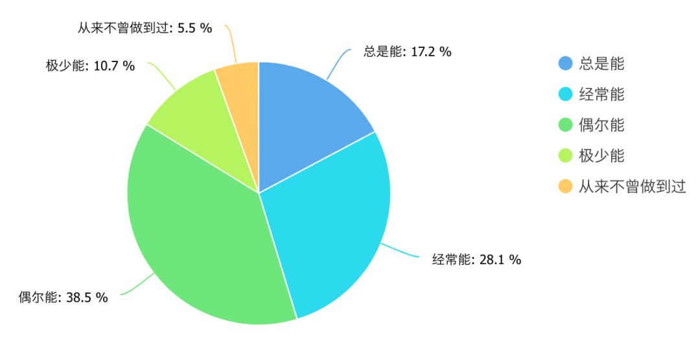
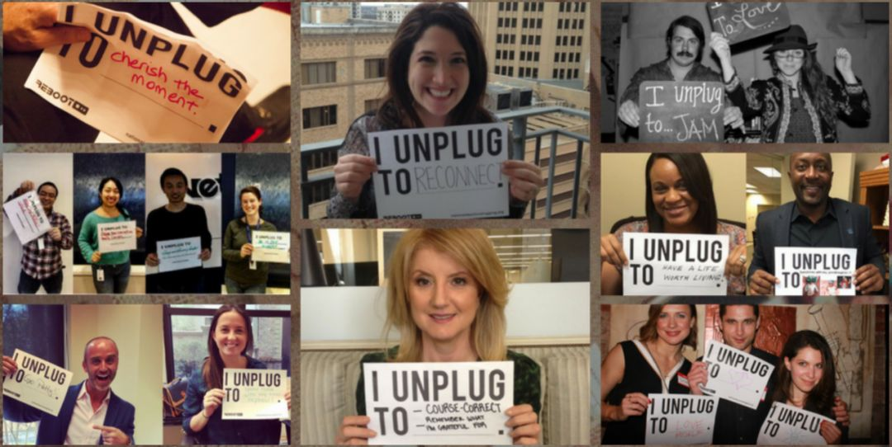

成年人如何控制手机分心，避免网络成瘾
2018-12-27
最近，我们在重庆市做了一个关于中小学生及其家长的网络和移动设备使用情况的问卷调查。初步统计结果显示：22%的学生家长承认自己对手机上瘾，每小时总要查看几次手机；而超过37%的中小学生则认为，自己的爸爸或妈妈对手机有瘾。学生家长手机成瘾的比例基本符合我们在调研前的预计，稍稍意外的是，有55%的学生家长坦承自己不能够成功的控制自己的手机使用时间。考虑到每个人对于自身的评估一般都会稍微乐观正面一些，所以实际上的不成功比例应该会更高。

这个调查的完整数据和正式调查报告将在经审核后通过正式渠道发布，所以要等上一段时间后才能出炉，但是学生家长们手机分心的状况值得我们快速响应一下。我们进行这项调研的目的之一，就是希望参与这项调研的中小学生和家长们在回答问卷的过程中，有所反思、有所感悟、有所收获；现在我们看到了学生家长们面临的问题，先在这里谈一些简单的建议，也算是对参与调研的家长们的一种初步反馈。当然，这些建议并不局限于学生家长，只要是面临着同样问题的朋友，都可以参考参考。
一、正确认识你的分心问题
对于绝大多数成年人而言，之所以会经常被手机分心，首先是因为对分心所造成的时间精力消耗的认识不到位。
那些平均每小时查看数次手机的学生家长多半是这样的：做一会儿事情，瞄一眼手机，做一会儿事情，瞄一眼手机，在某几次瞄手机的过程中，不知不觉的多瞄了一会儿，回过神来后又懊恼不已。
在这样的场景中，大多数人都会将注意力的重点放在“不知不觉的多瞄了一会儿”这样的情节上，在估计玩手机浪费的时间和精力时，往往也只会计算这种不知不觉地流逝掉的时间，因为那并不是出自于你的本心，所以这种被“偷走”的时间才是问题，对不对？
不对。我们今天并不想讨论网络产品的成瘾性设计机制，那是一个大问题，值得本公众号在后续用好几篇文章来专门讨论。现在我只想告诉你的是，与你的手机APP偷走的时间相比，你的分心会偷走你更多的时间。
伯克利加州大学的心理学者 Megan Jones 设计了一个非常简单的实验，让参与者能够立竿见影地感受到分心所造成的消耗为什么比自己估计的多得多，你可以立刻尝试一下：
第一步，请你以最快的速度说出“1—10”这个10个数字，再以最快的速度说出“A—J”这10个字母，12345678910, ABCDEFGHIJ。 第二步，请你以这样的顺序说完同样的内容：“1A2B3C4D……”
你在第二步时感觉怎么样？如果你觉得还不太过瘾的话，不妨把 ABCDEFG 换成汉语拼音“阿波吃的额佛哥”再试试？显然，你在第二步得花多得多的时间才能完成相同的内容，在 Megan Jones 的实验中，统计结果是至少三倍以上，并且错误率非常高。
人类大脑并不适合于快速切换任务，每一次从做事情切换到瞄手机，从瞄手机切换到做事情，都相当于大脑完全刹车并重新冷启动一次，频繁的切换，带给你的，不但是三倍以上的时间精力消耗，还会伴随着三倍以上的差错，而修正差错又会进一步加大时间精力成本。你时间精力消耗得越多，你就越容易分心；越是有太多的事情需要完成，你的压力就越大，就越容易游走到手机、媒体、游戏和网络世界中，进而迷失自己。
所以，不管是学生家长能否成功控制自己的手机使用时间，还是中小学生网络是否成瘾的问题，首要的关键都不在于用不用手机和上不上网，而是在于家长和孩子是否拥有专注于当前任务的能力。分心和成瘾，只是缺乏专注力的表现和后果而已。
二、用适当的方法训练专注力
很多时候并不是你想要分心，仅仅只是因为你不能够保持足够的专注。就算你不玩手机，只要你专注力缺失，你也会被诸如猫狗、电视、小说等等各种各样的事物吸引过去，然后感觉大把大把的时间在不知不觉间就无影无踪了。
那么，如何才能提升专注力呢？只要稍加留意，你就会发现，号称能够训练专注力、提升专注水平的各种文章、手机APP、电脑软件和智能硬件产品等等简直是多如牛毛、数不胜数，令人不知如何选择，其实总结起来训练专注力的方法不外乎两大类：一类是直接训练，另一类是间接训练。
现代脑科学研究证明，人类大脑及其思维能力和肌肉一样，是可以通过有效的训练得以塑造和增强的。目前得到了心理学、神经科学和脑科学等多学科研究广泛证实，并且大众认可度最高，直接训练专注力的方法是冥想（meditation）及其简化版本正念（mindfulness）。
冥想和正念并没有一个学术上的严格定义。一般而言，冥想讲究“思路放空、大脑留白”，方法五花八门，包括内观禅修、止观打坐、瑜伽和气功等等；而正念则讲究“专注当下”，一般是通过专注于呼吸的方法来进行练习。相对来说通过正念的方法来提升专注力水平更加简易可行一些：只需每天1至2次，每次1至3分钟，闭目深呼吸，排除一切思想杂念，专注于呼吸本身即可。
无论是冥想还是正念，其效果都是得到了科学研究的广泛证实的，但是如果没有恰当的方法和长期的坚持，一时半会儿是看不到任何效果的，特别是冥想，很容易让人感觉比较玄乎、不接地气。
所以还是更加推荐采取间接训练的方法来增强专注力，间接训练中最简易最普通但却非常有效的方法是：散步！有点出乎你的意料吧：想要提高注意力吗？想要戒除手机成瘾吗？想要成果丰硕、著作等身吗？每天放下你的手机，出门散一会儿步吧。
2017年，芬兰坦佩雷大学（University of Tampere）发表在《职业健康心理学期刊》（Journal of Occupational Health Psychology）的一项实验研究表明，午间散步能够显著改善参与者下午的专注程度。但是，比这项研究的说服力强得多多多多多多的是：古今中外，凡有大成就者，皆爱散步。
古希腊的泰勒斯（Thales）被后人称为“科学和哲学之祖”，有关他最著名的传说是他一次在散步的过程中因为仰观天象而不慎坠入井中。而据柏拉图记载，苏格拉底是在和裴德罗散步的过程中，完成了对哲学家的定义：“爱智者”由philos（爱好）和sophia（智慧）两字组合而成。亚里士多德则将自己建立的哲学学院干脆命名为“散步者”（Peripatos）。在德国海德堡，有一条著名的“哲学家小径”，黑格尔、歌德等大师都曾在其间行走思考。而在英国肯特郡，有一条著名的“沙道”（The Sandwalk），达尔文在这条被他自己称为“思考之路”的小道上散了几十年的步，所有达尔文研究者都将这条小道与达尔文的18本专著联系在一起。爱因斯坦超爱散步，每天上午花30 分钟走到研究所，下午再花 30 分钟散步回家，他甚至声称：“我自己的工作没啥意思，我来上班就是为了能和哥德尔一起散步回家。”
外国人如此，中国人也是如此。庄子和惠子在濠水的一座桥梁上散步，庄子说鱼很快乐，惠子说：“子非鱼，安知鱼之乐？”这就是著名的濠梁之辩。而孔子曾对他的弟子曾点说，谈一谈你的志向吧，曾点说：“暮春者，春服既成，冠者五六人，童子六七人，浴乎沂，风乎舞雩，咏而归。”夫子喟然叹曰：“吾与点也！”春日里，阳光下，边走边谈，且歌且行，中国人在散步中别有一番悠游恬然的自在意味。
所以，如何才能提升你的专注力呢？很简单，每天尽量在固定的时间，出门散步半小时左右；而在忙碌的间隔，或者在无聊的时候，或者在自己明显感觉注意力不在状态的时候，花2分钟，做个呼吸正念。如果你连呼吸正念都觉得麻烦的话，可以参照一下“do nothing for 2 minutes”的理念，每当你已经脱线或者快要脱线的时候，想像一下你正在大海边，观波浪起伏，听涛声阵阵，2分钟内，什么都不想，什么都不做。
当然，对于学生家长，我们更加推荐的是尽量坚持每天全家一起出门散步一小会儿，需要注意的是，一定要将全家人的手机都留在家里。
三、识别并删除分心的来源
为什么希望大家一定要把手机放在家里，道理其实大家都懂。前段时间某地公安发布一段“如何应对持刀歹徒”的视频非常火，稍加搜索你就会发现，不只是中国公安，美国军队的CQC近身格斗也是这样教的：

如果你已经对手机产生了严重的依赖性、已经自我感觉在其上浪费了太多的时间，并且自己想要减少却不能成功时，对策其实很简单——不管是游戏还是抖音，什么东西浪费掉了你最多的时间，你就删除什么东西，果断地拔腿就跑，才是你取胜的唯一途径，不要幻想你的意志力能够战胜那些令你分心的产品，它们不一定是歹徒，但绝对是拿着刀的。并且，最根本的问题在于：你不可能指望一方面打发时间，另一方面又能够不浪费时间。
好吧，你说我删吧，虽然我知道我很有可能又会装回去的，但是现在我决定删，游戏，删！抖音，删！淘宝，删！微信……？？？
微信既是大多数人分心的最大来源，也是几乎每个人都离不开的沟通工具。建议大家删除微信是非常不具备操作性的，所以我们必须得面对现实：你的智能手机中总会有你删不掉的东西，总是存在着令你分心的来源。
正因为如此，一些作家、艺术家和媒体工作者在全球范围内发起了一项倡议：数码安息（Digital Sabbath）。
数码安息提倡大家，每周花一天时间完全离开网络，不使用任何数码产品。全球数十万人进行了数码安息实验，许多人在自己的社交媒体上报告，在实施数码安息的那一天，自己的内心得到了平静，生活好像一下子慢了下来，很多人在实施了数码安息之后才重新想起了神的教导：“On the seventh day you shall rest.”

我们不信神，但我们周末也需要休息。一周已经用了6天手机了，在第7天，我们能不能把它放下？显然，99%以上的答案都是：不能。
其实只要花100元钱左右之后，至少一半以上认为自己不能做到的朋友，答案就会变成能做到。100元做什么？买一个按键手机，那种非常小巧、只能打电话发短信的直板按键手机。不信你试试，只要揣个小手机在口袋中，你没带手机那种惶恐感、焦虑感一下子就消失得无影无踪了：一机在手，天下我有，根本不怕陈书记、唐市长和班主任老师找不到我了。
强烈推荐大家尝试一下数码安息，如果觉得效果好，尽量每周坚持。我本人曾尝试过，感受的确是非常正面的，不过有以下注意事项：
一是一定要提前周知你的数码失联，比如在朋友圈中吼一句“有事打电话”，这样可以极大的减少你断线后的焦虑感。
二是备用手机一定要买那种非常非常小巧的。不要随便买一个，也不要去买老人机。自从触屏手机问世以来，手机越做越大，突然拿到一个比半个手掌还小的手机的时候，你会重新喜欢上这种感觉的，而喜不喜欢你手头的替代工具，对于你的数码安息实验能否成功，影响出乎意料的大。
三是现在很多直板手机的SIM卡仍然是大卡，和现在智能手机流行的小卡不一样，建议到营业厅去补办一张全新的SIM卡。现在营业厅的新卡都是三合一的，补办了新卡之后，在把小卡扣出来的时候，不要把大卡那一圈扔了，这样子你需要把SIM卡装到小手机的时候，让小卡和大卡那一圈重新合体就可以了。
然而，很有可能还是有相当一部分人会说：臣妾做不到啊！你就是给个按键手机给我，我玩贪吃蛇都可以玩半天！
对于这样的同志，难道我们就只有放弃治疗了吗？不，我觉得还可以再抢救一下。
四、培养有利于进入“心流”状态的爱好
贪吃蛇都可以玩半天的朋友，只有两种可能，一是太闲了，二是太忙了。
我们分开来讲。其实到了中小学生家长这个年龄阶段，绝大多数人都不容易，无休止的工作任务和繁重的生活负担，身心总是处于超负荷状态，精力长期得不到有效恢复，一旦稍有空闲，相当一部分人就会不知不觉地由奋斗模式切换为堕落模式，要么在被窝中窝上半天，要么贪吃蛇玩半天，我们在玩吗？不，我们只是在休息。
但是休息也是需要讲效率的，在保证了基本睡眠的基础上，越闲散的休息方式，休息效果就越差。赖床越久只会让你越困，还不如出门到公园散散步；贪吃蛇玩半天，你可能丝毫体会不到成就感和愉悦感，还不如玩半小时塞尔达传说。
什么？你推荐我玩游戏？？
没错，但这里的游戏是指不采用负面诱导机制的游戏。什么是负面诱导机制？举个例子：2014年，有一款叫 Flappy Bird 的手机游戏异常火爆，累计下载量超过5000万，但几乎所有的玩家玩了这款游戏之后都会感到愤怒和沮丧，《赫芬顿邮报》批评指出，此游戏“疯狂地恼人、困难和令人沮丧的游戏”，“结合了超陡峭的难度曲线、差劣无聊的画质和生硬的动作”。显然，Flappy Bird 就是负面游戏的典型代表，这类游戏通过疯狂的打击你、折磨你来逼迫你上瘾。为什么被折磨还会上瘾呢？美国心理学家斯金纳（Burrhus Frederic Skinner）把一只小白鼠放进通电的箱子，其中有一个按钮，只要按下就会断电，不按又会继续电击，小白鼠很快就学会了，不停地按按钮，不停地按按钮……显然，对于这类斯金纳箱子，我们的最佳选择就是远离它，越远越好。
怎样才算是积极正面的“好游戏”？我在这里用《塞尔达传说》来举例（并不是真的推荐大家去玩，对于大多数人来讲，你想玩也玩不了，它既不是电脑游戏也不是手机游戏），知名人士、《财新》杂志总编王烁专门写过两篇文章，谈他以及他女儿朵拉玩《塞尔达传说》有什么收获，在其中一篇中他写道：
…正反馈过程是一切学习的内核，游戏提供了最纯正的内在动机。 …既然今天的小朋友是这样学习的，那就让他们从最好的游戏那里学习吧。
为什么他会认为《塞尔达传说》是最好的游戏之一呢？除了正反馈外，笔者认为，最关键的一点可能在于它把“心流式体验”的设计理念发挥到了极致。
“心流”是积极心理学家米哈里•契克森米哈赖 (Mihaly Csikszentmihalyi) 提出的一个概念：是指我们在做某些事情时，那种全神贯注、投入忘我的状态——这种状态下，你甚至感觉不到时间的存在，在这件事情完成之后我们会有一种充满能量并且非常满足的感受。
在数字时代成长起来的一代人中，不止是王烁，许多高效人士都会在忙碌之余偶尔玩一玩游戏，目的不是为了玩游戏本身，而是为了迅速进入“心流”状态，从而让压力得到释放，身心得到恢复。
但是对于很闲的人来讲，很可能你已经在游戏上浪费了大量的时间，那么你在游戏上体会到的，就绝对不会是心流。心流的关键在于，在结束心流状态之后，有一种成就、满足和愉悦感，而沉迷于游戏的人，在结束游戏之后，往往是空虚、沮丧和懊恼。在这种情况下，你需要的不是把贪吃蛇换成塞尔达，而是需要放下手机，离开网络，走到生活中，走进自然里，体会生活之美、自然之趣。
你需要找到一种爱好，能够让你沉浸于其中的爱好，在这个爱好中愉悦身心、体验心流，从而培养出积极乐观、专注高效的思维行为习惯。钓鱼、游泳、登山、打球，很多活动都能够达到这样的效果，不管你选择什么样的爱好，有以下几点需要注意：
一是这个爱好要有趣。要能够持续吸引你投入到其中，要能够让你很容易进入到心流状态，忘记时间、忘掉烦恼。你不能够把一件你本来就不喜欢的事情来作为爱好。
二是在这个爱好中，恢复要大于消耗。比如很多人都爱打麻将，这是一个好的爱好吗？显然不是，你能够说“我打了一整晚的麻将，真是令人神清气爽”吗？又比如心流理论非常强调的挑战难度与技能水平的匹配程度，也不重要，重要的是以最小的精力投入，得到最大的身心恢复。
三是幸福感来自于内心。任何爱好都不能够直接给你幸福，幸福感来自于你的内心。 日本经营之神稻盛和夫出家修行时发现：
寺庙里，僧侣需要负责从煮饭到打扫所有日常杂事，这些事与坐禅比较，地位是相等的。换句话说，认真从事日常生活的劳务，与坐禅以求精神上的平和，从禅宗的角度来看两者并无差异。
其实心流这个概念的内涵本身就来源于东方哲学，一旦你把生活看作是一种修行而不是一种负担，你就有可能真正地体会到生活之美。今年稍早的时候，朋友向我推荐了《我想要始终不渝地生活》这本书，我一看书名就想，不管内容怎样，书名说得真好。然后去宜家买了一个固定在墙上的鞋柜，花了大半天时间自己很辛苦地组装，扔掉旧的活动鞋柜后，家门口得到了一点点微小的改善。如果生活就这样一点一点、一点一点的变得更加美好，不就是幸福本身吗？
成年人如何控制手机分心，避免网络成瘾？大家都是大人了，什么道理都懂，什么技巧都不值一提，什么都比不上一颗热爱生活的心。
五、太长了，我没看……
直接划到这里朋友们很举手，好吧，几乎所有人都举手了，没关系，请您至少看看我们的倡议。在此，我们向中小学生家长们提出以下倡议：
- 建议至少每周全家至少出门散步1次。
- 建议每个家庭都制定在特定时间、特定情况下禁用手机的家庭规则并严格遵守。包括吃饭时、走路时、对话交流时、早上起床后、晚上睡觉前不玩手机。
- 建议每位家长在和孩子讲话时目光要看着孩子的眼睛，不要一边玩手机一边和孩子讲话。
最后，您或您的孩子有手机分心、网络成瘾等相关问题吗？你们家有散步的习惯吗？您都有哪些兴趣和爱好？您孩子有哪些兴趣和爱好？欢迎留言讨论，分享您或您家的故事，向我们提出问题或者建议，谢谢！
本文首发于微信公众号，链接在此